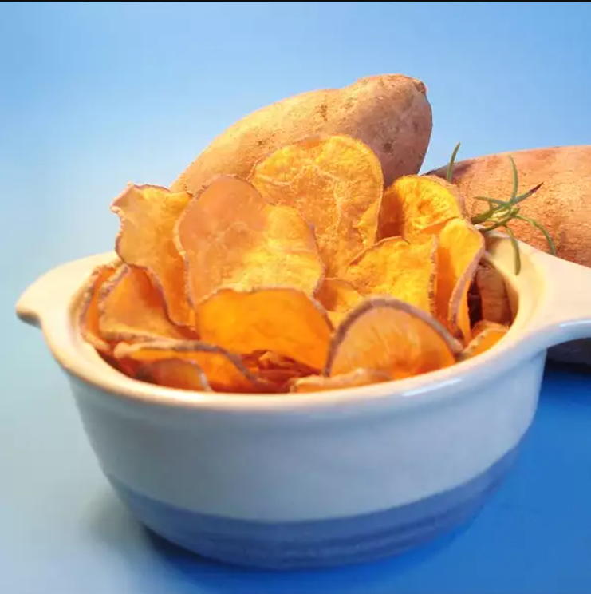

Potato Chip's Recipe

What is Potato Chips?
A potato chip is a thin slice of potato that has been either deep fried, baked, or air fried until crunchy. They are commonly served as a snack, side dish, ...
Ingredients
- 2 sweet potatoes, peeled and thinly sliced
- 1 tablespoon melted butter
- ½ teaspoon salt
- 2 teaspoons brown sugar
- ½ teaspoon ground cinnamon
Steps
- Preheat oven to 400 degrees F (200 degrees C). Grease two baking sheets.
- Arrange sweet potato slices in a single layer onto baking sheets. Stir together butter, salt, brown sugar, and cinnamon in a small bowl; brush onto sweet potato slices.
- Bake in preheated oven until edges curl upwards, about 20 to 25 minutes.
Return to Home